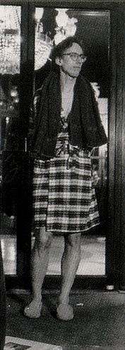

|

|
Back for a second go-round on the big screen at the Walter Reade Theater, John Pierson's TV series Split Screen is completing its third year on the Independent Film Channel
(now available in most of Manhattan). The weekly magazine-format show mixes colorful characters, underexposed film
celebrities, unexpected locations, surprising storylines, buried treasures and early discoveries of the films everyone else
will be talking about next year.
In his former life, Pierson spent a decade searching out the cream of first-time American independent
features from She's Gotta Have It to Clerks. Split Screen has enabled him to
spread an even wider net. Chris Smith's American Movie, Hands on a Hardbody, and The Blair Witch Project
were first seen on Split Screen over two years ago - with the show providing $10,000 of seed money
for Haxan Films to send those poor filmmakers out into the woods. The rest is indie film history.
Whether it's Christopher Walken cooking exploding shrimp; Mr. Nakajima demonstrating his Godzilla
walk; Richard Stanley going native to sneak back onto the Dr. Moreau set; a director at his
wit's end plotting to have Klaus Kinski killed; the toensfolk of Denison, Iowa, paying homage to
Donna Reed; or the townsfolk of Hailey, Idaho, cursing Bruce Willis - Split Screen is there! Even if Pierson parked the RV at the Ziegfeld Theater
and wasted half of the 1999 season lined up for Star Wars, Split Screen's relentless band
of filmmakers, now numbering over 100 in the first 50 episodes, never stopped. P.H. O'Brien and
Doug Stone went from Tokyo to Camp Jabberwocky. Amy Elliott and Lizzie Donius went from a Virginia
Civil War reenactment to the Palm Springs Follies. Brian Flemming and Keythe Farley won an Augie
at Tinseltown. T.J. Larson found that both Jesse Ventura and Billy Graham are linked by indie film. And Janet
Pierson answered the musical question, "Who the hell is 'Big Miss Movieola'?" All this and more tonight
- in our two-hour highlights program with special guests and extra surprises.
Split Screen was created by John Pierson, produced by Howard Bernstein/Eureka Pictures, edited by Michael LahHaie
and executive produced by Janet Pierson. The show airs every Monday at 8pm and 11pm EST and Saturdays
at 5:30pm EST on the Independent Film Channel (IFC).
|